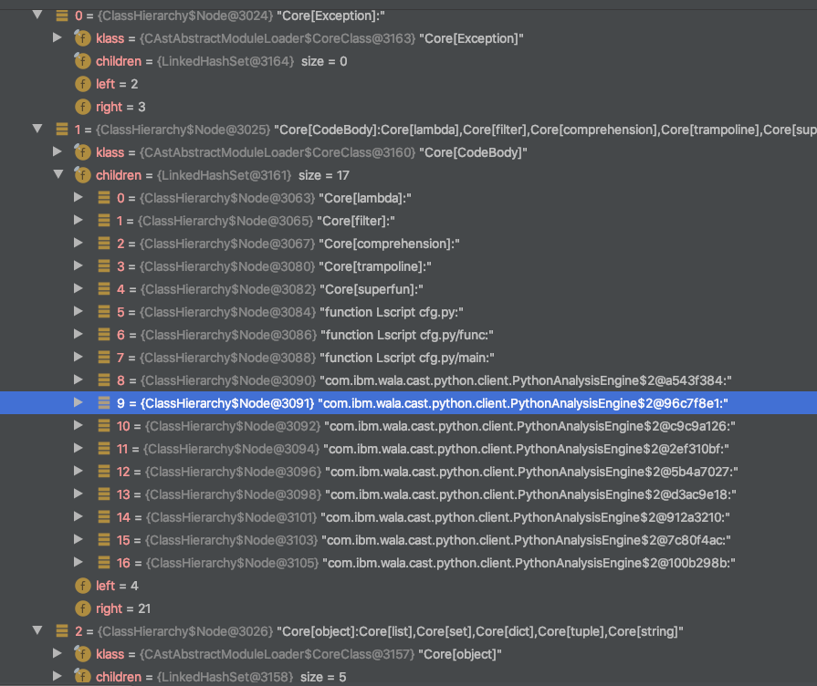
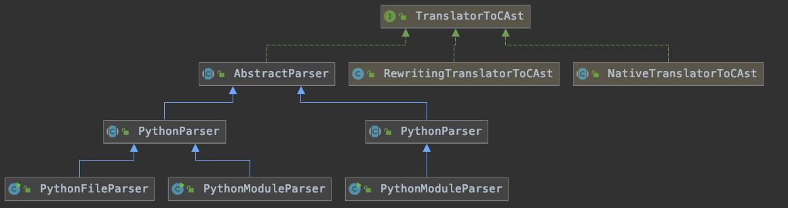
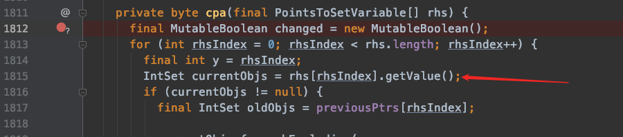
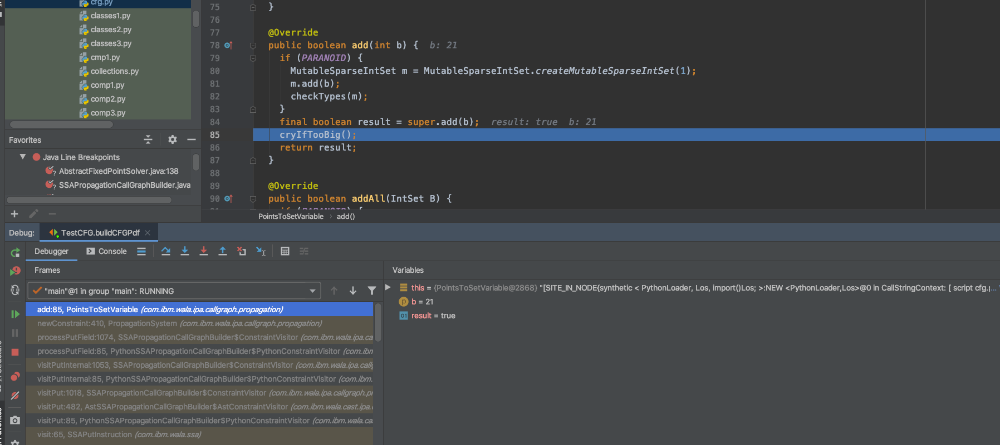

Python 解析
Build CFG
1
2
3
4
5
6
7
8
9
10
11
12
13
14
15 | PythonAnalysisEngine<Void> analysisEngine = new PythonAnalysisEngine<Void>() {
@Override
public Void performAnalysis(PropagationCallGraphBuilder builder) throws CancelException {
assert false;
return null;
}
};
String[] names={"cfg.py"};
Set<Module> modules = HashSetFactory.make();
for(String name : names) {
modules.add(new SourceURLModule(getClass().getClassLoader().getResource(name)));
}
analysisEngine.setModuleFiles(modules);
SSAPropagationCallGraphBuilder builder = (SSAPropagationCallGraphBuilder) analysisEngine.defaultCallGraphBuilder();
CallGraph CG = builder.makeCallGraph(builder.getOptions());
|
defaultCallGraphBuilder
| buildAnalysisScope(); // 构建分析范围
IClassHierarchy cha = buildClassHierarchy();
setClassHierarchy(cha);
Iterable<Entrypoint> eps = entrypointBuilder.createEntrypoints(scope, cha);
options = getDefaultOptions(eps);
cache = makeDefaultCache();
return getCallGraphBuilder(cha, options, cache);
|
buildCalssHierarchy()
调用com.ibm.wala.cast.python.client.PythonAnalysisEngine#buildClassHierarchy，内部通过SeqClassHierarchyFactory.make(scope, loader);生成CHA
主要有以下，注意到所有函数继承CodeBody

其中调用PythonLoader加载.py文件，Loader提供initTranslator()，得到PythonCAstToIRTranslator将其翻译为IR
AbstractAnalysisEngine#defaultCallGraphBuilder(cha, options, cache)
重点关注options，其中包含有几个selector
ClassTargetSelector 类查找器（先由new ClassHierarchyClassTargetSelector(cha)创建，再添加）
ClassHierarchyMethodTargetSelector 函数查找器（先由new ClassHierarchyMethodTargetSelector(cha)创建，再添加）
期间会调用BuiltinFunctions#builtinClassTargetSelector添加builtinfunc，PythonAnalysisEngine#addBypassLogic 添加自定义函数摘要
注意
com.ibm.wala.cast.python.ipa.summaries.BuiltinFunctions#argSummary(com.ibm.wala.classLoader.IClass, com.ibm.wala.types.TypeReference, int) 这里添加了伪函数体
PythonSSAPropagationCallGraphBuilder.makeCallGraph 构造Callgraph
其中调用com.ibm.wala.cast.ipa.callgraph.AstContextInsensitiveSSAContextInterpreter将AST转为SSA
调用com.ibm.wala.ipa.callgraph.propagation.cfa.nCFAContextSelector(1) 构造调用图
**FIXME：**在构造调用图之前，伪造缺失的函数和类
目录树
1
2
3
4
5
6
7
8
9
10
11
12
13
14
15
16
17
18
19
20
21
22
23
24
25
26
27
28
29
30
31
32
33
34
35
36
37
38
39
40
41
42
43
44
45
46
47
48
49
50
51
52
53
54
55
56
57
58
59
60
61
62
63
64
65
66 | .
├── analysis
│ └── ap
│ ├── AccessPath.java
│ ├── ArrayContents.java
│ ├── CallbackAP.java
│ ├── GlobalCallbackAP.java
│ ├── GlobalMethodAP.java
│ ├── GlobalVarAP.java
│ ├── IAPRoot.java
│ ├── IAccessPath.java
│ ├── ICallbackAP.java
│ ├── IMethodAP.java
│ ├── IPathElement.java
│ ├── LexicalAP.java
│ ├── ListAP.java
│ ├── LocalAP.java
│ ├── PropertyPathElement.java
│ ├── StarPathElement.java
│ └── UnknownPathElement.java
├── cfg
│ └── PythonInducedCFG.java
├── client # 程序入口
│ ├── PythonAnalysisEngine.java # 主要前端入口，将python源码转换为ICFG, addBypassLogic()添加伪造的函数原型
│ ├── PythonTurtleAnalysisEngine.java
│ ├── PythonTurtleLibraryAnalysisEngine.java
│ ├── PythonTurtlePandasMergeAnalysis.java
│ └── PythonTurtleSKLearnClassifierAnalysis.java
├── ipa
│ ├── callgraph
│ │ ├── PythonConstructorTargetSelector.java # 处理构造函数callee IR
│ │ ├── PythonSSAPropagationCallGraphBuilder.java
│ │ ├── PythonScopeMappingInstanceKeys.java
│ │ └── PythonTrampolineTargetSelector.java
│ └── summaries
│ ├── BuiltinFunctions.java # python内置函数摘要
│ ├── PythonComprehensionTrampolines.java
│ ├── PythonInstanceMethodTrampoline.java
│ ├── PythonSummarizedFunction.java # python 函数摘要结构体，继承wala.SummarizedMethodWithNames，增强可读性，由PythonSummary获得
│ ├── PythonSummary.java # python函数摘要结构体，继承com.ibm.wala.ipa.summaries.MethodSummary
│ ├── PythonSuper.java # Python超类，用于找方法调用
│ │ └──SuperMethodTargetSelector # 重写 getCalleeTarget()
│ ├── PythonSyntheticClass.java
│ └── TurtleSummary.java
├── ir
│ ├── PythonCAstToIRTranslator.java # 继承AstTranslator，将Cast转换为IR，重点关注doCall()方法
│ ├── PythonInstructionFactory.java #Python IR定义，继承wala.JavaSourceLoaderImpl.InstructionFactory
│ └── PythonLanguage.java # Python IR 继承wala.Language
├── loader
│ ├── DynamicAnnotatableEntity.java
│ ├── PythonLoader.java # 继承wala.CastAbstractModuleLoader, 加载.py文件, 待实现lookupClass方法，子类需要实现getTranslatorToCAst()
│ └── PythonLoaderFactory.java # 工厂返回PythonLoader
├── modref
│ └── PythonModRef.java
├── parser
│ └── AbstractParser.java # ast转Cast, 实现TranslatorToCAst接口,python2/3继承
├── ssa # Python特有的SSA
│ ├── PythonInstructionVisitor.java # 继承wala.AstInstructionVisitor, 添加PythonInvoke IR
│ ├── PythonInvokeInstruction.java # PythonInvokeIR 定义
│ ├── PythonPropertyRead.java
│ └── PythonPropertyWrite.java
├── types
│ └── PythonTypes.java # Python的wala.TypeReference
└── util
├── PythonInterpreter.java # 设置python2和Python3的Interpreter
└── TestCallGraphShape.java # 测试类
|
Python3
1
2
3
4
5
6
7
8
9
10
11
12
13 | .
├── loader
│ ├── Python3Loader.java # 继承PythonLoader
│ └── Python3LoaderFactory.java # 工厂返回Python3Loader
├── parser
│ ├── PythonCAstEntity.java # python的CAst，继承AbstractScriptEntity
│ ├── PythonFileParser.java
│ ├── PythonModuleParser.java # 转.py文件入口，makeParser() 返回walaPythonParser
│ ├── PythonParser.java # 转CAst（PythonParser#translateToCAst()) 和 IR
│ │ └──PythonParser.CAstVisitor # 用于将jython.astnode 转换为 CAstNode
│ └── WalaPythonParser.java # 转换为jython.ast的类, 继承AnalyzingParser
└── util
└── Python3Interpreter.java
|
CFG
1
2
3
4
5
6
7
8
9
10
11
12 | import os
import subprocess
def func()->str:
return "ABC"
def main():
a=func()
x=subprocess.call(ttt.f(a))
if __name__ == '__main__':
main()
|
以下为main() 函数的 CFG：
1
2
3
4
5
6
7
8
9
10
11
12
13
14
15
16
17
18
19
20
21
22
23
24
25
26
27
28
29
30 | CFG:
BB0[-1..-2]
-> BB1
BB1[0..1]
-> BB2
-> BB5
BB2[2..7]
-> BB3
-> BB5
BB3[8..8]
-> BB4
-> BB5
BB4[9..9]
-> BB5
BB5[-1..-2]
Instructions:
BB0
BB1
0 v5 = lexical:func@Lscript cfg.py cfg.py [33:6] -> [33:10]
1 v3 = invokeFunction < PythonLoader, LCodeBody, do()LRoot; > v5 @1 exception:v6cfg.py [33:6] -> [33:12] [3=[a]]
BB2
3 v11 = lexical:subprocess@Lscript cfg.py cfg.py [34:6] -> [34:16]
4 v9 = getfield < PythonLoader, LRoot, call, <PythonLoader,LRoot> > v11cfg.py [34:6] -> [34:21]
5 v15 = global:global ttt cfg.py [34:22] -> [34:25]
6 v13 = getfield < PythonLoader, LRoot, f, <PythonLoader,LRoot> > v15cfg.py [34:22] -> [34:27]
7 v12 = invokeFunction < PythonLoader, LCodeBody, do()LRoot; > v13,v3 @7 exception:v16cfg.py [34:22] -> [34:30] [3=[a]]
BB3 # call graph 解析不到，找不到函数
8 v8 = invokeFunction < PythonLoader, LCodeBody, do()LRoot; > v9,v12 @8 exception:v17cfg.py [34:6] -> [34:31] [8=[x]] #subprocess.call #call graph能解析到，注意所有函数调用都由CodeBody.do(this, args)完成
BB4
BB5
|
python的调用实际上都动态调用CodeBody.do(this, args)，所有python均为一个对象并继承CodeBody类，并实现do方法。
注意在第7行，ssa表现的是v12=ttt.f(v3)，
Shortcomings
- BIF需要重新构造函数摘要，目前不支持多态（str()和str(a)）【can be fixed】
- 缺失依赖时无法构建callee【may be fixed】，需要讨论在何时处理该问题
- 数据流分析，有参考但是需要定制【can be fixed】
WALA框架
com.ibm.wala.cast.loader.CAstAbstractModuleLoader#init(),先转义为CAst，再转换为IR：
1
2
3
4
5
6
7
8
9
10
11
12
13
14
15
16
17
18
19
20
21
22
23
24 | @Override
public void init(final List<Module> modules) {
final CAst ast = new CAstImpl();
// convert everything to CAst
final Set<Pair<CAstEntity, ModuleEntry>> topLevelEntities = new LinkedHashSet<>();
for (Module module : modules) {
translateModuleToCAst(module, ast, topLevelEntities);
}
// generate IR as needed
final TranslatorToIR xlatorToIR = initTranslator();
for (Pair<CAstEntity, ModuleEntry> p : topLevelEntities) {
if (shouldTranslate(p.fst)) {
xlatorToIR.translate(p.fst, p.snd);
}
}
if (DEBUG) {...}
finishTranslation();
}
|
translateModuleToCAst(module, ast, topLevelEntities) 读取目标文件（module），转化为CAst（保存在ast）
CAstNode定义在com.ibm.wala.cast.tree.CAstNode

xlatorToIR 继承AstTranslator，调用其translate方法，调用walkEntities()->visitEntities()将CAst转化为IR
ClassHierarchyMethodTargetSelector
getCalleeTarget查找函数调用
com.ibm.wala.ipa.cha.ClassHierarchy#resolveMethod(com.ibm.wala.classLoader.IClass, com.ibm.wala.types.Selector)调用com.ibm.wala.classLoader.IClass#getMethod , 找类中的方法
com.ibm.wala.ipa.summaries.BypassMethodTargetSelector#getCalleeTarget # 找类中方法（在找不到类时）
关键在于这里

如果有函数摘要，worklist会添加新函数指针，然后在执行一遍这里，此时currentObjs有值，没有函数摘要时，worklist不添加函数指针，currentObjs没有值，
- 找rhs[0].setValue()
在new import时set

- 分析第二次调用cpa的执行路径